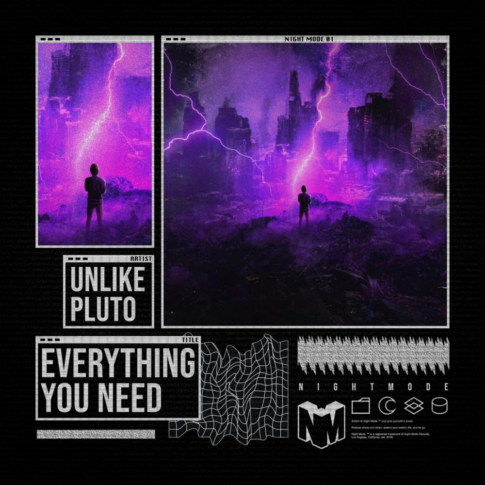

|  | When you’re a fresh record label looking to make an immediate impact on the music scene it’s important to deliver a quality tune to start off on the right foot. That’s exactly what Twitch streamer Tucker (Jericho) Boner and Daniel Goudie of Disciple Records have accomplished with their new imprint, NIGHT MODE. Source |
|---|
| This is one of my most viewed songs. I made this song in 2016. if you want to here more of my music go on YouTube and search dark cat. or follow me on Spotify dark cat. Source |